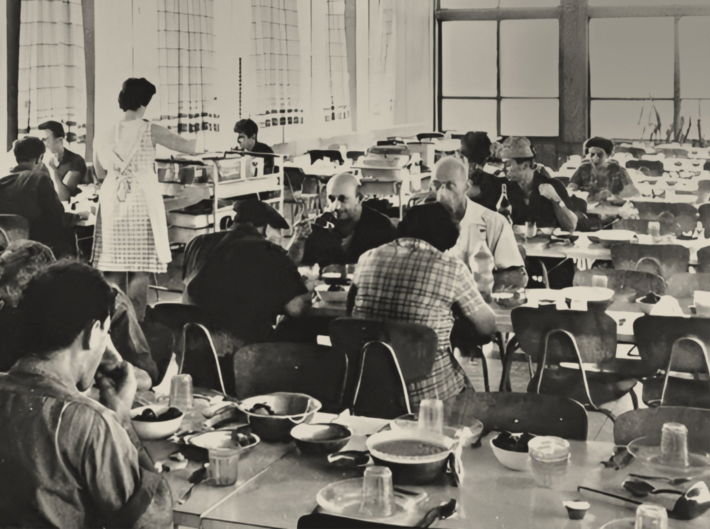

אפשרות א · עריכתי, בסגנון Google Arts & Cultureתצלום מעוגל (28) בשוליים · כרטיס משטח חופף · אריחי עובדות כרטיסי M3 מלאים


יישוב · קיבוץ (להמחשה)
דורות
הסיפור של דורות: צילומים, מסמכים ועדויות מהיישוב, מההקמה ועד היום.
- שנת הקמה1941
- תאריך עבריחנוכה תש״ב
- סוג יישוב (להמחשה)קיבוץ
- אוכלוסייה (להמחשה)650 תושבים
אפשרות ב · גיליון מקום, בסגנון Google Mapsתצלום גדול ורצועת תמונות · פאנל פרטים: שם, סוג, כפתורי פעולה עגולים עם תווית, ורשימת פרטים עם אייקונים
 עוד תצלומים
עוד תצלומיםאפשרות ג · לוח ידע, בסגנון חיפוש Googleפסיפס תמונות (אחת גדולה ושתיים קטנות) · כותרת עם צ'יפ סוג · כרטיסיות ראשיות · טבלת עובדות "תווית: ערך"
כל התצלומיםהסיפור של דורות: צילומים, מסמכים ועדויות מהיישוב, מההקמה ועד היום.
- שנת הקמה
- 1941
- תאריך עברי
- חנוכה תש״ב
- סוג יישוב (להמחשה)
- קיבוץ
- אוכלוסייה (להמחשה)
- 650 תושבים